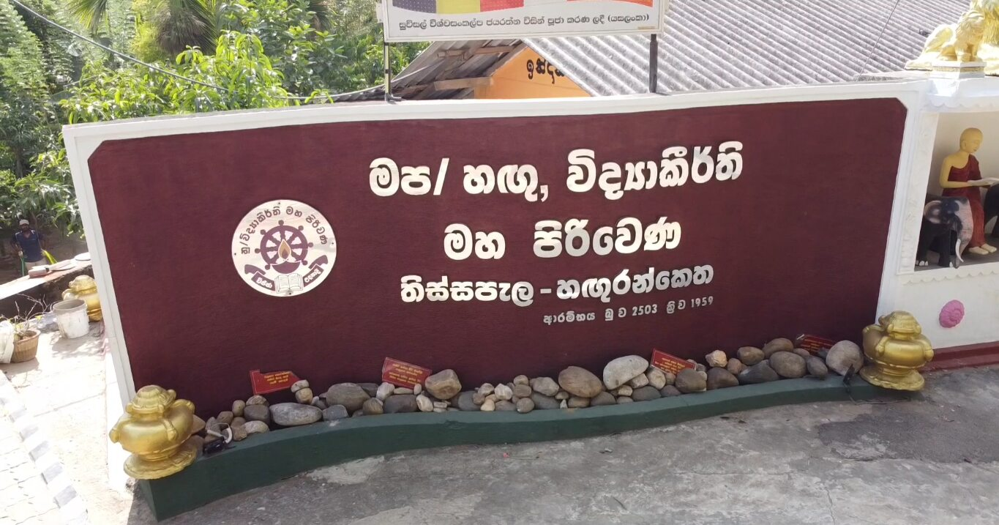

ඔබ සාදරයෙන් පිළිගනිමු
විද්යාකීර්ති මහ පිරිවෙණ
තිස්සපෑල · හඟුරන්කෙත
ප්රධාන දොරටුවේ සිට යන මාර්ගය
මාර්ග වීඩියෝව ළඟදීම
මෙම ස්ථානයට යන මාර්ග වීඩියෝව අපි ඊළඟ පියවරේ එකතු කරමු.

තිස්සපෑල · හඟුරන්කෙත
ප්රධාන දොරටුවේ සිට යන මාර්ගය
මෙම ස්ථානයට යන මාර්ග වීඩියෝව අපි ඊළඟ පියවරේ එකතු කරමු.